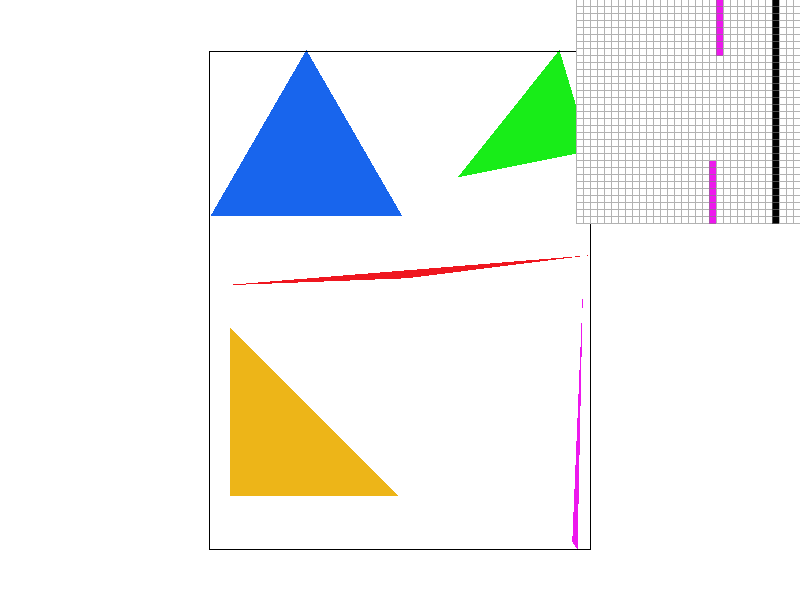
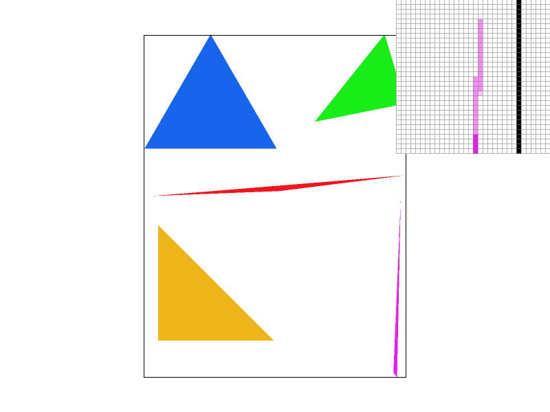
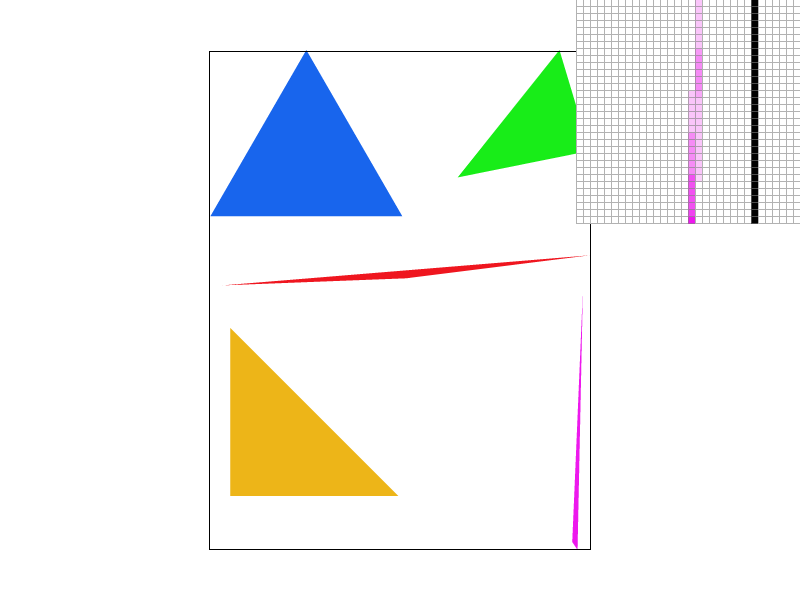
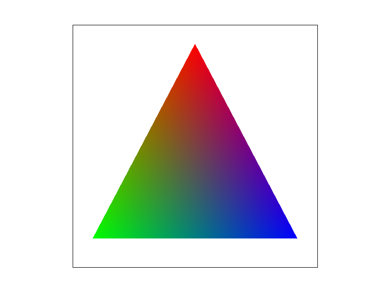
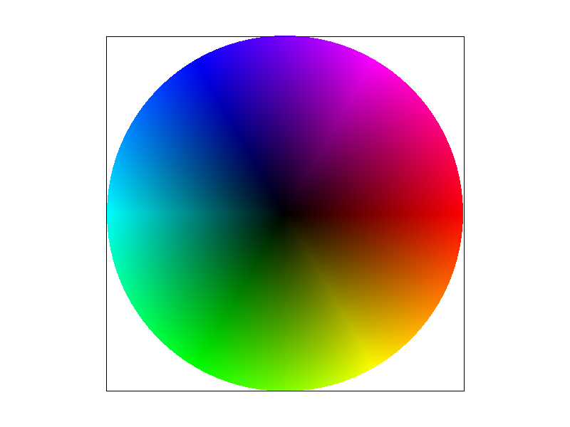
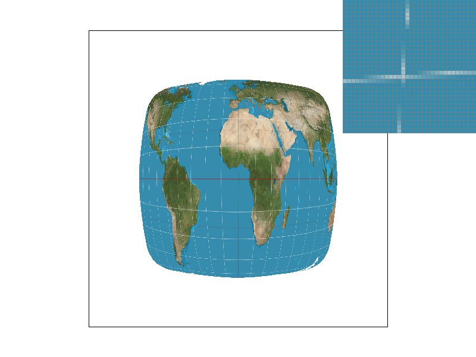
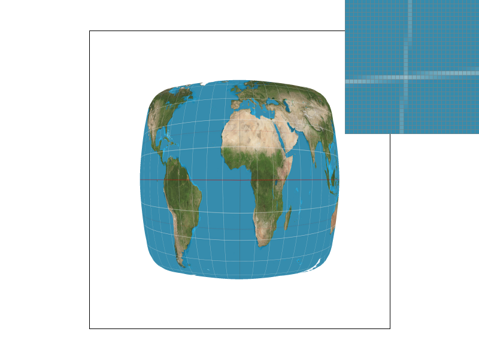
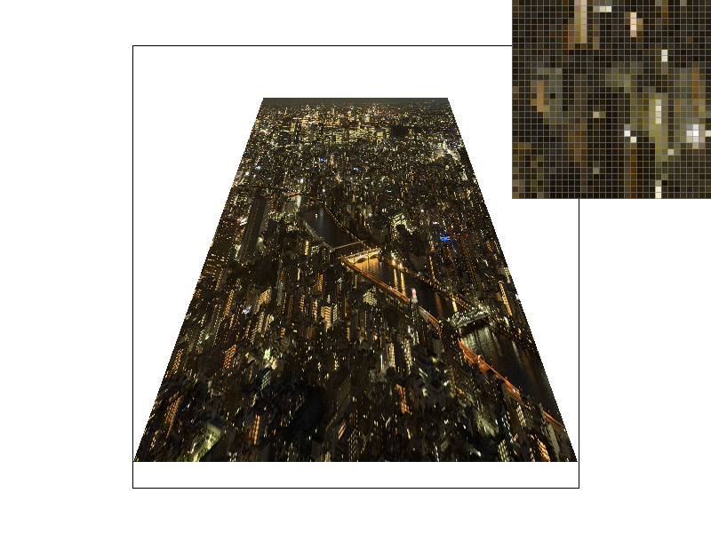

By the time a triangle reaches rasterize_triangle, its three vertices \(P_0, P_1, P_2\) are already in
screen space (pixel units, floating point). My rasterizer turns that continuous triangle into a set of covered
pixels in three steps.
Which sign counts as "inside" depends on the winding order: counter-clockwise and clockwise triangles give
opposite signs. Instead of reordering vertices, I accept a sample when all three values are \(\ge 0\)
or all three are \(\le 0\), so both windings render correctly (svg/basic/test6.svg checks
this). Because the comparisons include equality, a sample lying exactly on an edge counts as inside, so no edge
is left un-rasterized and two triangles that share an edge never leave a crack between them. Every covered pixel
is written with fill_pixel, and resolve_to_framebuffer later converts the stored
colors to 8-bit RGB for display.
My basic implementation is the bounding-box algorithm: it visits every pixel inside the triangle's bounding box exactly once and does a constant amount of work per pixel (three line equations and a sign check). Its cost is therefore proportional to the area of the bounding box, and it never scans the whole framebuffer. The bounding box is also clamped to the screen, so it can only shrink.
The optimized version described in the extra credit below goes further: on each row it tests only a sub-range of the bounding box's pixels, and the extra bookkeeping is a constant amount of work per row. Since it tests a subset of the same samples with the same test, it never does more per-sample work than the bounding-box algorithm.
basic/test4.svg
basic/test4.svg with the default view (800 × 600, 1 sample per pixel). The pixel inspector
(top right) is centered on the top of the thin magenta triangle, next to the canvas's right border (the black
vertical line).
The magenta triangle is one continuous shape, but near its top vertex it is narrower than a pixel. With only one sample per pixel, a pixel is filled only if its exact center falls inside the triangle, and most centers there miss it. In the inspector, the triangle shows up as a short isolated run of pixels, then a gap, then the rest of the triangle; the right tip of the thin red triangle breaks into scattered pixels for the same reason. This is aliasing: a single point sample cannot represent geometry smaller than a pixel. Supersampling in Task 2 addresses it.
The reference images are compared byte-for-byte, so I set one hard constraint: the optimized rasterizer must produce exactly the same pixels as the basic one. That ruled out the classic incremental trick of adding a constant to each edge value per pixel, because accumulated floating-point error flips samples that lie right on an edge. Within that constraint I made four changes.
int, and triangles that are entirely off screen return
immediately.
To check correctness, I rendered all 32 provided SVGs plus 8 randomly generated stress scenes with both versions and compared the PNG files byte-for-byte: all 40 were identical. The stress scenes target the risky cases: 3000 random triangles of both windings, 3000 long slivers, 3000 degenerate triangles (collinear or repeated vertices), vertices on integer and half-integer coordinates (so edges pass exactly through sample points), sub-pixel triangles, and huge triangles reaching \(\pm 10^6\) pixels. The provided reference tests that passed before still pass.
Timings are the average of 20 consecutive svg.draw() calls in DrawRend::redraw()
(measured with std::chrono::high_resolution_clock), median of 3 runs; Release build (MSVC
/O2) on an Intel Core i9-12900H, 1024 × 1024 framebuffer, 1 sample per pixel.
| Scene | Basic (ms) | Optimized (ms) | Speedup |
|---|---|---|---|
basic/test3.svg | 8.75 | 4.29 | 2.0x |
basic/test4.svg | 0.44 | 0.23 | 1.9x |
illustration/04_sun.svg | 4.83 | 1.73 | 2.8x |
subdiv/triangle7.svg | 4.90 | 1.03 | 4.7x |
hardcore/02_degenerate_square2.svg | 529.5 | 14.5 | 36.4x |
| 400 random large triangles | 114.3 | 41.0 | 2.8x |
| 3000 thin slivers | 368.1 | 21.3 | 17.3x |
| 400 thin diagonal triangles | 429.6 | 8.8 | 48.7x |
| 3000 sub-pixel triangles | 0.75 | 0.80 | 0.9x |
The speedup tracks how much of a triangle's bounding box is empty. A typical large triangle covers roughly half of
its box, so skipping the empty half (together with the hoisting) gives about 2–3x on the provided
illustrations and on random large triangles. Long thin triangles are the extreme case:
02_degenerate_square2.svg is a fan of 1000 slivers from one corner of the canvas, each only
one SVG unit wide at its far end but with a bounding box that can cover most of the canvas, so almost every
sample in those boxes is wasted by the basic version; the span version is 36x faster, and thin diagonal triangles reach almost 50x. The one case with no gain is sub-pixel
triangles: their bounding box is only one or two pixels, there is nothing to skip, and the per-row span setup
costs slightly more than it saves.
With one sample per pixel, every pixel is all-or-nothing: it takes the triangle's color if its center is covered and stays white otherwise. That produces jagged edges, and geometry thinner than a pixel can fall between pixel centers and vanish or break apart (the magenta triangle in Task 1). The underlying problem is aliasing: a triangle edge is a sharp step, which contains arbitrarily high frequencies, and one sample per pixel cannot represent them.
Ideally a pixel's color would be the average of the scene over the pixel's area, i.e. the fraction of the pixel the triangle covers. Supersampling approximates that integral numerically: take several samples inside each pixel and average them. This amounts to low-pass (box) filtering the image before it is sampled at pixel resolution, so edges get intermediate shades in proportion to coverage instead of hard stair steps.
I treat supersampling as rendering a higher-resolution image and then downsampling it. With a sample rate of
\(n^2\) (1, 4, 9 or 16), each pixel holds an \(n \times n\) grid of samples, and sample_buffer stores
all of them as one image of \((n \cdot \text{width}) \times (n \cdot \text{height})\) Color values,
row by row. Supersample \((i, j)\) of that image sits at
\[ \left( \frac{i + 0.5}{n},\ \frac{j + 0.5}{n} \right) \]
in pixel units, i.e. at the centers of an evenly spaced \(n \times n\) grid inside pixel
\((\lfloor i/n \rfloor, \lfloor j/n \rfloor)\). With \(n = 1\) this is exactly the pixel center from Task 1.
I changed four parts of the pipeline:
sample_buffer now has \(\text{width} \times \text{height} \times
\text{sample rate}\) entries. Both set_sample_rate (the -/= keys) and
set_framebuffer_target (window resize) resize it, and clear_buffers resets every sample
to white at the start of each frame.
rasterize_triangle runs the same algorithm as in Task 1, but over
supersamples instead of pixels: it walks the rows of supersamples inside the triangle's bounding box, tests each
supersample with the three line equations, and writes the triangle's color into the covered ones. The per-row span
optimization from Task 1 carries over unchanged, now measured in supersamples.
fill_pixel now writes the color into all
\(n^2\) supersamples of the pixel, so a point or line pixel resolves to exactly its color and the canvas border
stays solid black at every sample rate.
resolve_to_framebuffer averages each pixel's
\(n^2\) supersamples (a box filter) and converts the result to 8-bit RGB. I accumulate the sum in
double, which is exact for up to 16 samples, so a pixel whose samples all share one color averages
back to exactly that color. Summing in float could instead produce, say, 0.19999 for a solid 0.2,
which the 8-bit conversion would round down to the next lower level. I also clamp to \([0, 1]\) before converting.
The cost is memory and time proportional to the sample rate. At 16 samples per pixel an 800 × 600 window stores
7.68 million samples, about 92 MB at 12 bytes per Color, and every triangle tests up to 16 times as many
samples. Storing the full supersample buffer is what makes overlapping and adjacent triangles correct: each sample
simply keeps the color of the last triangle that covered it.
To check correctness, I used the fact that the view scales with the window size: rendering at 256 × 256 with 16 samples per pixel places samples at exactly the same points as rendering at 1024 × 1024 with 1 sample per pixel and averaging each 4 × 4 block. Across 10 test scenes at sample rates 4 and 16, the two differed only by 8-bit rounding (about one level at most), apart from the pixels on stroked outlines, which are expected to differ because lines are not supersampled. With 1 sample per pixel the output is byte-identical to Task 1, so all reference tests that passed before still pass.
basic/test4.svg at 1, 4 and 16 samples per pixelAll three screenshots use the default view (800 × 600) with the pixel inspector at the same spot: the top of the thin magenta triangle, next to the canvas's right border.
 |
 |
|
Top row: the full screenshots. Bottom row: the pixel-inspector region of the same screenshots, enlarged on this page (display cropping only; the image files are unmodified).
1 sample per pixel. Near its top vertex the magenta triangle is narrower than a pixel, so whether a pixel is filled depends only on whether its center happens to land inside. The result is fully saturated pixels separated by a gap: the triangle falls apart.
4 samples per pixel. The gap closes. Pixels that the triangle only partly covers now have some, but not all, of their 4 samples inside and come out as lighter pink, so the thin tip becomes a continuous but faint line. The shading is coarse, though: with 4 samples a pixel can only take 5 levels of coverage (0, 1/4, …, 1), which shows up as blocky steps along the tip.
16 samples per pixel. The tip becomes a smooth gradient that fades out toward the vertex as the triangle gets thinner. With 17 possible coverage levels the shade tracks the true covered area much more closely. The same happens at the right tip of the red triangle, which is continuous at 16 samples per pixel instead of breaking into scattered pixels.
These results are what box-filtered supersampling predicts: each pixel's color converges to the fraction of its area the triangle covers. More samples per pixel means a finer estimate of that fraction, so thin features that single-sample rendering drops entirely are recovered as partially covered, lighter pixels.
SVG transforms act on 2D points, but a translation is not a linear map in 2D, so it cannot be written as a
\(2 \times 2\) matrix. Homogeneous coordinates fix this: a point \((x, y)\) becomes \((x, y, 1)\), and all three
transforms become \(3 \times 3\) matrices that compose by matrix multiplication. Following the SVG spec, I
implemented
\[ T(d_x, d_y) = \left[\begin{array}{ccc} 1 & 0 & d_x \\ 0 & 1 & d_y \\ 0 & 0 & 1 \end{array}\right], \]
\[ S(s_x, s_y) = \left[\begin{array}{ccc} s_x & 0 & 0 \\ 0 & s_y & 0 \\ 0 & 0 & 1 \end{array}\right], \]
\[ R(\theta) = \left[\begin{array}{ccc} \cos\theta & -\sin\theta & 0 \\ \sin\theta & \cos\theta & 0 \\ 0 & 0 & 1 \end{array}\right], \]
where rotate takes \(\theta\) in degrees and converts it to radians. Rotating about a point
\((c_x, c_y)\), as in rotate(a cx cy), is handled by the parser as
\(T(c_x, c_y)\,R(a)\,T(-c_x, -c_y)\). With these in place, svg/transforms/robot.svg (and the other
test files that use transforms, such as 09_kochcurve.svg) match the reference images exactly.
One detail matters when writing SVG by hand: screen space has \(y\) pointing down, so the same matrix that rotates counterclockwise in standard math coordinates appears to rotate clockwise on screen. To raise an arm on screen I therefore use negative angles.
my_robot.svg, rendered with 16 samples per pixel (800 × 600).
I wanted cubeman to greet the viewer: one arm raised and waving, the other hanging relaxed, and his head tilted toward the waving hand with a small smile. The yellow block is his hand, and the thin arcs on either side of it follow the path the hand sweeps around the elbow, to suggest motion. I kept the original red body and proportions so the change in pose stands out.
To make the pose, I restructured the arms from robot.svg into joint hierarchies. In the original file
each arm segment is placed with a translation only, which is enough for a straight T-pose but not for bending at
a joint. In my_robot.svg every joint is its own group: the group first translates the origin to the
joint, then rotates, and the segment and everything attached further down the arm are children of that group.
The raised arm looks like this (the polygons are omitted):
<g transform="translate(50 -40)"> <!-- shoulder --> <g transform="rotate(-40)"> <!-- raise arm --> upper arm <g transform="translate(75 0)"> <!-- elbow --> <g transform="rotate(-70)"> <!-- bend up --> forearm, hand, arcs </g> </g> </g> </g>
Because transforms compose down the hierarchy, a point on the forearm is transformed by \[ T_{\text{body}}\,T_{\text{shoulder}}\,R(-40^\circ)\,T_{\text{elbow}}\,R(-70^\circ). \] The forearm ends up rotated by \(-110^\circ\) in total and stays attached to the upper arm at the elbow, even though I only wrote two small local rotations. The hand and the motion arcs live inside the forearm's group, so they follow it automatically. The relaxed arm uses the same structure with \(-75^\circ\) at the shoulder and \(-20^\circ\) at the elbow, and the head is rotated \(10^\circ\) about the neck, with the eyes and mouth inside the head's group so they tilt with it.
Barycentric coordinates describe a point by how much each of a triangle's vertices "pulls" on it. Any point \(P\) in the plane of triangle \(ABC\) can be written as a weighted average of the three vertices, \[ P = \alpha A + \beta B + \gamma C, \qquad \alpha + \beta + \gamma = 1, \] and the weights \((\alpha, \beta, \gamma)\) are its barycentric coordinates. \(P\) lies inside the triangle exactly when all three weights are non-negative. A vertex's weight is 1 at that vertex, 0 everywhere on the opposite edge, and changes linearly in between, so moving toward a vertex increases its weight.
A convenient way to see the weights is through areas. Connecting \(P\) to the three vertices splits the triangle into three smaller triangles, and each vertex's weight is the area of the sub-triangle opposite it, divided by the area of the whole triangle. As \(P\) approaches \(A\), the sub-triangle \(PBC\) grows to fill the whole triangle and \(\alpha\) approaches 1.
Because the weights say how close a point is to each vertex, they are exactly what is needed to blend values that are only known at the vertices. For any per-vertex attribute \(V\) (a color here, texture coordinates in Task 5), \[ V(P) = \alpha V_A + \beta V_B + \gamma V_C \] varies smoothly across the triangle and matches the given value at each vertex.

rgb_triangle.svg: one triangle with a pure red, green and blue
vertex (default view, 1 sample per pixel).
With vertex colors \((1,0,0)\), \((0,1,0)\) and \((0,0,1)\), a pixel's color \((r, g, b)\) is its barycentric coordinate triple \((\alpha, \beta, \gamma)\), so this image is a direct picture of the coordinates. Each corner is a pure color because one weight is 1 there. Along the bottom edge the red weight is 0, so only green and blue mix. At the centroid all three weights equal \(1/3\), so the color there is a neutral dark gray: the screenshot measures \((83, 85, 86)\) at that pixel, close to the ideal \((85, 85, 85)\).
The triangle traversal from Tasks 1 and 2 (bounding box, per-row spans, supersamples, three line tests) is now
a single shared function. For every covered sample it calls a small per-triangle function to get that sample's
color. rasterize_triangle passes one that always returns its flat color, and
rasterize_interpolated_color_triangle passes one that interpolates. After the refactor, every
flat-colored test scene still renders byte-identically to before.
Computing the weights is nearly free, because the inside test already evaluates each edge's line equation at the sample. The line equation \(L_{BC}\) of edge \(BC\) is 0 on that edge and changes linearly, exactly like \(\alpha\), so dividing by its value at the opposite vertex normalizes it: \[ \alpha = \frac{L_{BC}(P)}{L_{BC}(A)}, \qquad \beta = \frac{L_{CA}(P)}{L_{CA}(B)}, \] \[ \gamma = 1 - \alpha - \beta. \] The two denominators are computed once per triangle, and each sample's color is then \(\alpha\,c_A + \beta\,c_B + \gamma\,c_C\). Since the interpolation happens per supersample, supersampling from Task 2 works unchanged: each supersample gets its own interpolated color, and resolving averages them. A degenerate triangle (zero area) has no well-defined weights and is skipped.
Several mathematically equivalent ways to compute these weights round differently in floating point, and
the reference images are compared byte-for-byte. The formula above, which is the one from lecture, matched the
reference for test7.svg on all but one of its roughly one million pixels, and that pixel differs by a
single color level (129 vs. 130).
basic/test7.svg
basic/test7.svg with the default view and 1 sample per pixel.The color wheel is a fan of 96 thin triangles around the center. Each triangle has a black vertex at the center and two vertices on the rim colored with neighboring hues, so barycentric interpolation blends from black at the center out to saturated colors at the rim, and between neighboring hues around the rim. Faint radial lines are visible where adjacent triangles meet: interpolation is linear within each triangle, so the wheel's smooth hue change is approximated piecewise, and the approximation shows along the triangle boundaries.
Texture mapping gives each triangle vertex a texture coordinate \((u, v)\) into an image, the texture. For every screen sample inside the triangle I interpolate \((u, v)\) with the barycentric coordinates from Task 4, which tells me where in the texture that sample lands. That point is continuous, but the texture is a discrete grid of colored texels, so the point usually falls between texel centers. Pixel sampling is the rule for turning that continuous position into a color by reconstructing the texture between its texels.
rasterize_textured_triangle reuses the shared traversal from Task 4. For each covered sample it
computes the barycentric coordinates, interpolates \((u, v)\), stores it in a SampleParams together
with the current pixel and level sampling modes, and returns tex.sample(sp). For now,
Texture::sample always uses the full-resolution level 0 and dispatches on the pixel sampling mode;
Task 6 adds the mipmap level.
Both samplers place texel \(i\) of a \(w\)-texel-wide level at \(u = i / (w - 1)\), so \(u = 0\) and \(u = 1\) hit
the centers of the first and last texel. Nearest rounds \(u\,(w - 1)\) and \(v\,(h - 1)\) to the closest integer.
Bilinear takes the floor of the same scaled position as the top-left texel and the fractional part as \((s, t)\).
Neighbors past the edge are clamped to the border texel. With this convention all six textured reference images
(basic/test8.svg and svg/texmap/*) match byte-for-byte. I also made both samplers check
that the requested mipmap level exists before indexing it, rather than after.
All four screenshots are svg/texmap/test1.svg with the default view (800 × 600) and the pixel
inspector at the same spot: a crossing of two grid lines in the ocean west of Africa. The world map texture is
2058 × 1036 texels, and the visible part is drawn about 330 pixels wide and tall, so each screen pixel
covers roughly 4.6 texels horizontally and 2.3 vertically. The texture is being minified, and the grid
lines are only about one texel wide.
 |
 |
Each pair shows the full screenshot and, below it, the pixel-inspector region of the same screenshot enlarged on this page (display cropping only; the image files are unmodified).
Supersampling and bilinear filtering attack the same problem at different scales. Supersampling takes more samples in screen space, while bilinear filtering makes each sample read a smoother version of the texture. With 16 samples per pixel, the gap between nearest and bilinear becomes much smaller, because the averaging over many samples already hides most of nearest's errors. Measured over the whole map in these screenshots, the mean per-pixel difference between the two methods drops from 2.26 color levels at 1 sample per pixel to 0.78 at 16.
The two methods differ most when the texture is magnified, with one texel covering several pixels. Nearest then shows each texel as a visible flat square with hard edges, while bilinear produces smooth gradients between texel centers. They also differ, as here, when the texture has sharp features about one texel wide and each pixel covers only a few texels, because bilinear picks up features that nearest steps over. They differ little when the texture is smooth (low-frequency), since neighboring texels are then similar and blending changes almost nothing. They also both fail when the texture is strongly minified. If a pixel covers dozens of texels, reading just one or four of them is still a tiny sample of the pixel's footprint, so both alias. Fixing that requires pre-filtered, lower-resolution textures, which is the mipmapping of Task 6.
Pixel sampling (Task 5) reads one or four texels per sample. That works when a screen pixel covers about one texel, but when a texture is minified, a single pixel's footprint can span many texels. Reading one or four of them then samples the texture far below its own resolution, so fine detail aliases into noise and sparkle. Ideally the pixel would get the average of every texel under its footprint, but computing that per sample is expensive.
A mipmap precomputes those averages. Level 0 is the full-resolution texture, and each further level halves the width and height by averaging blocks of the previous level, so one texel of level \(k\) summarizes a \(2^k \times 2^k\) block of level 0. Level sampling picks, for each sample, the level whose texels are about as large as the pixel's footprint, so that a single lookup already approximates the area average.
The footprint comes from how fast the texture coordinates change across the screen. If moving one pixel in \(x\) or \(y\) moves the texture position by the vectors \(\partial(u,v)/\partial x\) and \(\partial(u,v)/\partial y\), measured in texels of level 0, then the footprint is about \[ L = \max\left( \left\| \frac{\partial (u,v)}{\partial x} \right\|,\ \left\| \frac{\partial (u,v)}{\partial y} \right\| \right) \] texels wide, and the matching level is \(D = \log_2 L\). The three level sampling modes use \(D\) differently:
L_ZERO: ignore \(D\) and always sample level 0 (Task 5's behavior).L_NEAREST: round \(D\) and sample that single level.L_LINEAR: sample levels \(\lfloor D \rfloor\) and \(\lfloor D \rfloor + 1\) and blend them by the
fractional part of \(D\). Combined with bilinear pixel sampling this is trilinear filtering.
In rasterize_textured_triangle, besides the texture coordinates at the sample \((x, y)\), I compute
them at \((x + 1, y)\) and \((x, y + 1)\) and store all three in SampleParams. The line equations are
linear, so moving one pixel changes each of them by a constant (\(-\Delta y\) of the edge for a step in \(x\),
\(+\Delta x\) for a step in \(y\)). That gives the neighbors' barycentric coordinates without re-evaluating
the equations. Texture::get_level subtracts to get the two difference vectors, scales them by the
full-resolution width and height to measure them in texels, and returns \(\log_2\) of the longer one.
Texture::sample then chooses the level (or pair of levels) by lsm, clamps it to the
levels that exist, and samples each level with nearest or bilinear pixel sampling. A degenerate footprint, which
gives an undefined level, falls back to level 0.
To check the level computation, I derived the exact level from the SVG geometry of texmap/test1.svg
at seven screen positions and compared it with the level my code computes there (rendered as grayscale). They
agreed to within the precision of the 8-bit visualization, for example 1.49 vs. 1.44 at the center of the map and
2.62 vs. 2.57 near its edge.
A bug in the starter code. generate_mips allocates every mipmap level, but its loop stopped one
level short, so the smallest level (1 × 1) was never computed and stayed black. Printing the average
value of each level confirmed it: for the parrot texture the last level averaged 0.0, while the level above it
averaged 102.6. Strongly minified surfaces that reach that level would therefore have faded toward black. I fixed
the loop bound, and the last level now averages 102.0, in line with the others.
I used a photo I took of Tokyo at night (tokyo_night.png), which is
full of tiny, high-contrast lights and windows: exactly the kind of detail that aliases badly when minified. I
converted it from JPEG to PNG, cropped out the empty sky, scaled it to 1512 × 1066, and stripped its
metadata (including GPS location). tokyo_night.svg maps it onto a
ground plane seen in perspective, built from a 24 × 24 grid of textured triangles whose vertices and texture
coordinates follow the exact perspective projection. The texture is only slightly minified near the bottom of
the view and more and more strongly toward the far edge at the top, so one image spans many mipmap levels.
All four screenshots use the default view (800 × 600) and 1 sample per pixel, with the pixel inspector at the same spot in the far, strongly minified part of the image.
 |
|
L_ZERO, P_NEAREST |
L_ZERO, P_LINEAR |
L_NEAREST, P_NEAREST |
L_NEAREST, P_LINEAR |
Each pair shows the full screenshot and, below it, the pixel-inspector region of the same screenshot enlarged on this page (display cropping only; the image files are unmodified).
L_ZERO, P_NEAREST. The far part of the city turns into sparkly noise: isolated,
very bright pixels next to dark ones. Each pixel shows whichever single texel its sample happens to hit, out of
the many under its footprint.
L_ZERO, P_LINEAR. Slightly softer, but the sparkle remains. Blending four
neighboring texels cannot represent a footprint that spans many more.
L_NEAREST, P_NEAREST. Most of the sparkle is gone, because each lookup reads a
pre-averaged texel from a coarser level. The price is some blockiness: nearby pixels can round to different
levels, and within a level, nearest sampling shows the coarse texels as small flat blocks.
L_NEAREST, P_LINEAR. The smoothest of the four: the level removes the aliasing,
and bilinear sampling hides the coarse level's texel grid.
To put a number on the sparkle, I measured the mean absolute brightness difference between neighboring pixels
in a patch of the far region, where aliasing noise shows up as large pixel-to-pixel jumps. It is 33.5 for
L_ZERO/P_NEAREST, 30.3 with P_LINEAR, 13.6 for
L_NEAREST/P_NEAREST, and 10.3 for L_NEAREST/P_LINEAR. This is
only a proxy, since blurring lowers it too, but it matches what the screenshots show: level sampling removes most
of the noise, and bilinear pixel sampling smooths a bit more on top.
I timed svg.draw() on this scene for every combination (800 × 600, Release build on an Intel Core
i9-12900H, average of 5 draws, median of 3 runs; texture loading and mipmap generation are not included).
| Level | Pixel | 1 sample/px (ms) | 16 samples/px (ms) |
|---|---|---|---|
L_ZERO | P_NEAREST | 6.1 | 84.6 |
L_ZERO | P_LINEAR | 5.2 | 72.7 |
L_NEAREST | P_NEAREST | 12.2 | 182.6 |
L_NEAREST | P_LINEAR | 11.9 | 179.7 |
L_LINEAR | P_NEAREST | 15.7 | 224.4 |
L_LINEAR | P_LINEAR | 14.0 | 213.1 |
L_ZERO here (12 vs. 6 ms), because every sample now interpolates three texture
coordinates instead of one and computes a level. L_LINEAR adds a second lookup per sample (about
15 ms). Antialiasing: by far the most effective tool against texture minification, at the cost of some
blur, and of visible level transitions with L_NEAREST that L_LINEAR smooths out.